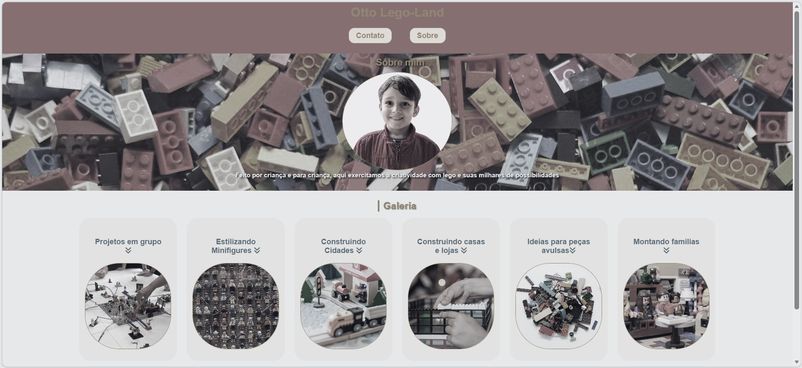

Sobre mim
Olá, meu nome é Brenda Melo e sou uma estudante de desenvolvimento Front-End pelo programa Entra21 oferecido pela Blusoft em parceria com o SENAI. Atualmente estou em transição de carreira e descobrindo um novo universo através da tecnologia. Durante minha última experiência, desenvolvi habilidades com organização, comunicação e resolução de demandas no dia a dia, competências que hoje também levo para área de desenvolvimento. Tenho gostado muito dessa nova fase, aprendendo constantemente e criando projetos prtáticos enquanto evoluo meus conhecimentos. Esta é uma excelente oportunidade para aprender.
Projetos
Otto LegoLand
Landing page desenvolvida para praticar HTML e CSS, com foco em estruturação e responsividade.
Ver projeto
Próximos Projetos
Em breve novos projetos serão adicionados conforme avanço nos estudos de Front-End.